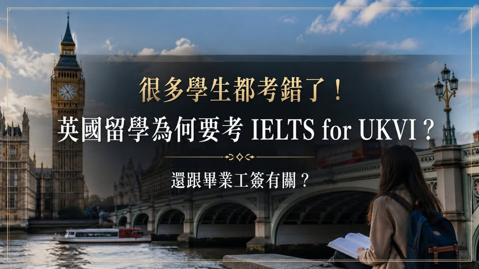

《看懂制度，選對世界》第一集
申請英國大學，要考 IELTS for UKVI Academic 嗎？
很多學生都考錯了！申請英國大學，要考 IELTS for UKVI Academic？每年都有學生準備申請英國，努力考完雅思後，才發現自己報錯版本！

很多學生都考錯了！申請英國大學，要考 IELTS for UKVI Academic？每年都有學生準備申請英國，努力考完雅思後，才發現自己報錯版本！明明考的是 IELTS Academic 學術組，為什麼學校又說需要： IELTS for UKVI Academic 結果只能重新報名，不但多花一次考試費，還可能延誤 CAS、學生簽證，甚至趕不上原定入學時間。但也有另一個常見誤解： 沒有考 IELTS for UKVI，畢業後就不能申請英國畢業工簽。這個說法不正確！一般雅思和 UKVI 雅思差在哪裡？
IELTS Academic 和 IELTS for UKVI Academic 的考試內容、難度與評分方式基本相同，都考聽、說、讀、寫。差別主要不在題目，而在： 考試場地 身分驗證 監考程序 成績查核規格 IELTS for UKVI 屬於英國政府認可的 SELT安全英語測驗，必須在指定考場完成，才能在部分簽證與 CAS 程序中使用。簡單來說： 一般 IELTS Academic 主要用於學校審核入學資格。IELTS for UKVI Academic 除了可以申請學校，也可在需要時作為英國簽證認可的英語證明。
很多學生犯的錯，就是看到「Academic學術組」便直接報名，卻沒注意前面是否有 for UKVI。哪些學生最容易考錯？以下幾類學生，較常被要求提供 UKVI 雅思： 申請大學預科 Foundation 申請國際大一 International Year One 英文未達標，需要先讀語言課程 語言課程與學士、碩士課程分開核發 CAS 學校通知明確寫著 SELT 或 UKVI required 但這不代表所有英國留學生都必須考 UKVI。
若學生直接申請英國大學的學士或碩士正課，學校具備自行評估英文能力的資格，就可能接受： 一般 IELTS Academic PTE Academic TOEFL iBT 校內英文測驗 其他校方認可證明 所以，不能只問： 「申請英國是不是一定要考 UKVI？」 更重要的是問： 我的課程需要哪種雅思？這份成績能不能用來核發 CAS？UKVI 雅思和英國畢業工簽有什麼關係？英國畢業生簽證正式名稱是 Graduate visa，也就是大家常說的畢業工簽或 PSW。
申請 Graduate visa 時，目前並沒有要求學生重新提交 IELTS 或 IELTS for UKVI 成績。它主要看的是： 是否持Student visa在英國讀書 是否完成符合資格的英國課程 學校是否向英國內政部通報完成學業 是否在學生簽證有效期間內提出申請 因此，UKVI 雅思與畢業工簽的關係是： 英語成績符合要求 取得 CAS 申請 Student visa 完成英國學士或碩士課程 申請 Graduate visa UKVI 雅思可能影響前面的入學與學生簽證程序，但它不是畢業工簽的直接申請條件。
沒有考 UKVI，還能申請畢業工簽嗎？可以。假設學生申請英國碩士正課，大學接受一般 IELTS Academic，並順利核發 CAS，學生也成功取得Student visa並完成課程，畢業後仍可依規定申請 Graduate visa。不會因為當初考的不是 UKVI 版本，就失去畢業工簽資格。反過來說，就算考了 IELTS for UKVI，若沒有完成符合規定的課程，也不能只靠一張雅思成績申請 Graduate visa。報名雅思前，一定要確認三件事 1 申請的是預科、國際大一、語言課程、學士還是碩士？
2 學校要求 IELTS Academic，還是 IELTS for UKVI Academic？3 這份成績能不能用來核發 CAS？考錯雅思版本，問題可能不是少一分，而是整張成績無法用在原本規劃的課程與簽證程序。所以報名前不要只問「我要考幾分？」 還要問： 我要考哪個版本？這個版本能不能辦 CAS？先確認再報考，才能避免重考、延誤簽證，甚至錯過入學時間。